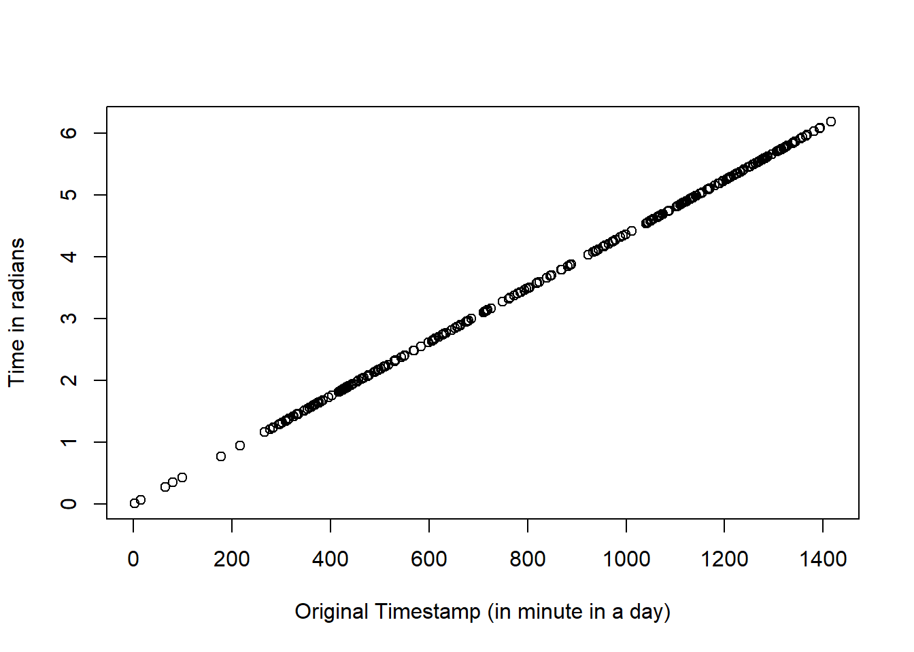
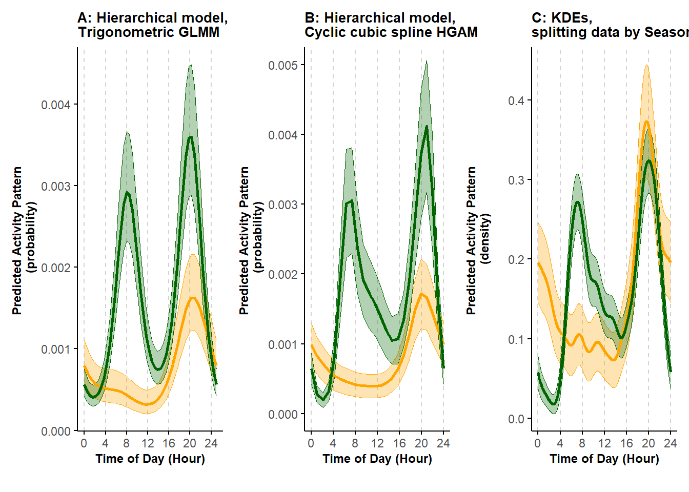

Tutorial 9 Kernel Density Estimators
Kernel Density Estimators (KDEs) are currently the main approach used to estimate activity patterns from time-stamped (e.g., camera-trap) data. At the time of writing, we are aware of three packages available in R to estimate activity patterns using KDEs: overlap (Ridout and Linkie 2009; Meredith and Ridout 2021); activity (J. M. Rowcliffe et al. 2014; M. Rowcliffe 2022); and circular (Agostinelli and Lund 2022a; Oliveira-Santos, Zucco, and Agostinelli 2013).
In this Tutorial, we illustrate how to estimate activity patterns using KDEs with these three packages and highlight the consequences of not aggregating data first when using KDEs. We also compare a KDE-based estimate with results obtained using hierarchical model-based approaches for the analysis of seasonal activity patterns of black bears presented in Tutorial 6.1.
9.1 Data preparation for KDEs
In Tutorial 4, we introduced the concept of data aggregation, that is, grouping images of a species taken at a certain location within a short time frame into independent encounter events. This process reduces short-term correlation in the data and it is often recommended as a preparatory step before applying KDEs (but see Peral, Landman, and Kerley (2022) for a different point of view). Thus, we begin our KDE-based analysis by aggregating our data from a raw format to independent encounter events.
We load the three R libraries listed above along with other packages necessary for wrangling the data. We also load and preview the data. In this first section of this Tutorial, we use the subset of the camera-trap observations of American black bears collected in northern Minnesota between mid-May and mid-July 2017 (Iannarilli et al. 2021).
# Load libraries
rm(list = ls())
set.seed(129)
library(dplyr)
library(tidyr)
library(forcats)
library(ggpubr)
library(gridExtra)
library(grid)
library(lubridate)
library(activity)## Warning: package 'activity' was built under R version 4.2.3## Warning: package 'overlap' was built under R version 4.2.3## Warning: package 'suntools' was built under R version 4.2.3library(circular)
# Load data
dat <- read.csv("data_input/species_records.csv") %>%
filter(Species == "BlackBear" & Session == "Spring2017") %>%
droplevels %>%
select(-X)
head(dat)## Station Species DateTimeOriginal Date Time Session
## 1 10A BlackBear 2017-07-08 18:34 2017-07-08 18:34:02 Spring2017
## 2 10A BlackBear 2017-07-08 18:34 2017-07-08 18:34:02 Spring2017
## 3 10A BlackBear 2017-07-08 18:34 2017-07-08 18:34:03 Spring2017
## 4 10A BlackBear 2017-07-10 18:56 2017-07-10 18:56:24 Spring2017
## 5 10A BlackBear 2017-07-10 18:56 2017-07-10 18:56:25 Spring2017
## 6 10A BlackBear 2017-07-10 18:56 2017-07-10 18:56:26 Spring2017Choosing a temporal threshold for determining whether two records close in time belong to the same encounter event is not trivial. Here, we use a threshold of 30 minutes, which we chose after inspecting lorelograms quantifying the level of dependence as a function of time between observations (Iannarilli et al. 2021, 2019).
We set the correct date-time format for the column specifying when each picture was taken (DateTimeOriginal), group the records based on species and camera-trap site (Station), order the data within each group, and calculate the time difference (in minutes) between each record and the previous. When calculating these differences, NAs are assigned to the first record collected for each species at a location. We replace those NAs with zeros, then proceed to assign a unique numeric identifier to each event. We then extract the date-time information for the first record of each group (alternatively, it is possible, for example, to calculate the median time of the records belonging to a certain event) and retain only the columns of interest.
# Set the threshold that define independence independence between subsequent records
independence_interval <- 30 #minutes
# Aggregate data to reduce short-term temporal dependence
dat_event <- dat %>%
mutate(DateTimeOriginal = ymd_hm(DateTimeOriginal)) %>%
group_by(Species, Station) %>% # group by species and location
arrange(DateTimeOriginal, .by_group = TRUE) %>% # arrange record temporally within each group
mutate(timediff = as.numeric(difftime(DateTimeOriginal, lag(DateTimeOriginal), units="mins")), # calculate time difference (in minutes) between consecutive events
timediff = replace_na(timediff, 0),
grp = ifelse(timediff >= independence_interval, 1, 0), # create events
grp_ind = cumsum(grp) + 1) # assign a group number to each event
# group by camera site and event group
# summarize: consider time of first image as time of the independent event
dat_event <- dat_event %>%
group_by(Species, Station, grp_ind) %>%
slice(1) %>%
select("Station", "Species", "DateTimeOriginal", "Date", "Time", "Session")## Adding missing grouping variables: `grp_ind`## # A tibble: 6 × 7
## # Groups: Species, Station, grp_ind [6]
## grp_ind Station Species DateTimeOriginal Date Time Session
## <dbl> <chr> <chr> <dttm> <chr> <chr> <chr>
## 1 1 10A BlackBear 2017-07-08 18:34:00 2017-07-08 18:34:02 Spring2017
## 2 2 10A BlackBear 2017-07-10 18:56:00 2017-07-10 18:56:24 Spring2017
## 3 1 10B BlackBear 2017-05-23 16:28:00 2017-05-23 16:28:52 Spring2017
## 4 2 10B BlackBear 2017-06-22 14:29:00 2017-06-22 14:29:44 Spring2017
## 5 3 10B BlackBear 2017-06-25 20:58:00 2017-06-25 20:58:10 Spring2017
## 6 4 10B BlackBear 2017-07-02 07:03:00 2017-07-02 7:03:05 Spring2017# alternative code using the median time associated with each encounter event
# summarize: calculate median time for each event
# dat_event2 <- dat_event %>%
# group_by(Species, Station, grp_ind) %>%
# summarise(median_time = median(DateTimeOriginal),
# photo_date = Date[1])We can visually compare the data before and after aggregation.
# Plot number of records by camera trap station before and after data aggregation
dat_summary <- dat %>%
group_by(Station) %>%
summarize(n_records = n()) %>%
mutate(Aggregation = "Before")
dat_event_summary <- dat_event %>%
group_by(Station) %>%
summarize(n_records = n()) %>%
mutate(Aggregation = "After")
rbind(dat_summary, dat_event_summary) %>%
mutate(Aggregation = fct_relevel(Aggregation, "Before")) %>%
ggplot(., aes(x = n_records, y = Station, group = Aggregation)) +
geom_col() +
labs(y = "Camera trap station", x = " Number of records") +
theme_bw() +
facet_wrap(~Aggregation, scales = "free_x")Figure 9.1: Numbers of records at each camera site before and after aggregating the data to reduce short-term autocorrelation
Comparing the resulting number of records per location before and after data aggregation highlights that many images were taken within less than 30 minutes from a previous image. In the left panel, each record corresponds to an image, whereas, in the right panel, each record corresponds to an independent encounter event. In our specific case, aggregating data also removes duplicates recorded within the same trigger event. We will use the aggregated version of the dataset in the next sections of this tutorial.
All the three packages require time values provided as radians. Thus, the next step is to transform the time values from the HH:MM:SS format to radians. This requires some multiplications. Since there are \(2 \times \pi\) radians in a circle and \(60 minutes \times 24 hours\) in a day, we can estimate minutes in terms of radians by dividing the minutes corresponding to a certain time of the day by the total number of minutes in a day (equal to \(1440 = 60 \times 24\)) and multiplying the resulting value by \(2 \times \pi\). For simplicity, we do not consider seconds here.
# Specify the format of the column Time
dat_event$Time <- hms(dat_event$Time)
# Convert time values to radians
dat_event$Time_Rad <- (hour(dat_event$Time)*60 + minute(dat_event$Time))/(60*24)*2*pi
plot((hour(dat_event$Time)*60 + minute(dat_event$Time)),
dat_event$Time_Rad,
xlab = "Original Timestamp (in minute in a day)",
ylab = "Time in radians"
)
The plot above shows the match in time of the records expressed as minutes (x axis) and radians (y axis).
9.2 Comparison of KDE estimators
Our data are now ready, and we can proceed with estimating the activity patterns using each of the three packages available in R for applying the KDE approach. We will first run the code for each package and then visually compare the results.
9.2.1 Using the overlap package
We start with the overlap package (Ridout and Linkie 2009; Meredith and Ridout 2021). To facilitate comparison of estimates based on the other two packages, we explicitly specify the values for the argument n.grid, which controls the number of points along the 24 hours cycle (in radians) at which density values are estimated. The argument xscale = 24*60 returns the values of these points in minutes, instead of the default radians.
# To avoid plotting
pdf(file = NULL)
# Estimate activity patterns and store values in an object
res_over <- densityPlot(dat_event$Time_Rad,
rug = FALSE,
adjust = 1,
xscale = 24*60,
n.grid = 513,
extend = NULL) %>%
mutate(se = NA,
Package = "Overlap",
Data = "Aggregated")
dev.off()## png
## 2# store plot in object
pl_over <- ggplot(res_over, aes(x=x, y=y, group=Data)) +
geom_line(aes(linetype=Data, color=Data), linewidth=1) +
scale_color_manual(values = c("#CC79A7")) +
labs(x = "", y = "Density", title = "A: Overlap pkg") +
theme_minimal() +
theme(legend.position = "none",
legend.background = element_rect(fill = "white", colour = "black"),
legend.title = element_text(size=8,face="bold"),
axis.line = element_line(colour = 'black', linetype = 'solid'),
axis.ticks = element_line(colour = 'black', linetype = 'solid'),
axis.text = element_text(size=8),
axis.title.y = element_text(size=10,face="bold"),
axis.title.x = element_blank(),
panel.grid.minor.y = element_blank(),
panel.grid.major.y = element_blank(),
panel.grid.major.x = element_line(colour = 'lightgrey', linetype = 'dashed', linewidth=0.5),
panel.grid.minor.x = element_blank(),
strip.text = element_text(size = 10, colour = "black", face = "bold")
) +
scale_x_continuous(breaks=seq(0,24*60,60*4), labels=seq(0,24,4), expand = expansion(mult = c(0.02,0.02)))+
scale_y_continuous(expand = expansion(mult = c(0.02, 0.02)))
# print first rows of the output
head(res_over)## x y se Package Data
## 1 0.0000 0.0002348518 NA Overlap Aggregated
## 2 2.8125 0.0002256965 NA Overlap Aggregated
## 3 5.6250 0.0002170437 NA Overlap Aggregated
## 4 8.4375 0.0002088781 NA Overlap Aggregated
## 5 11.2500 0.0002011836 NA Overlap Aggregated
## 6 14.0625 0.0001939432 NA Overlap Aggregated9.2.2 Using the activity package
The fitact function within the activity package (J. M. Rowcliffe et al. 2014; M. Rowcliffe 2022) allows users to estimate uncertainty (i.e. confidence intervals) around the activity patterns using bootstrap approaches. Following the recommendations available in the function’s help-file and based on the number of events available in the dataset, 313, we resample from the data (argument sample = "data"). Some tricks are needed to store the estimates returned by the fitact function in a R object.
# Estimate activity patterns and store values in an object
res_acti <- as.data.frame(fitact(dat_event$Time_Rad,
reps = 999,
sample = "data",
show = FALSE)@pdf[,1:3]
) %>%
mutate(x = x/(2*pi)*24*60, # to bring results back to the minutes scale,
Package = "Activity",
Data = "Aggregated") # store plot in an object
pl_acti <- ggplot(res_acti, aes(x=x, y=y, group=Data)) +
geom_ribbon(aes(ymin=y-1.96*se, ymax=y+1.96*se, color=Data, fill=Data), alpha=0.3) +
geom_line(aes(linetype=Data, color=Data), linewidth=1) +
scale_color_manual(values = c("#CC79A7")) +
scale_fill_manual(values = c("#CC79A7")) +
labs(x = "", y = "Activity density", title = "B: Activity pkg") +
coord_cartesian(ylim = c(0,0.4)) +
theme_minimal() +
theme(legend.position = "none",
axis.line = element_line(colour = 'black', linetype = 'solid'),
axis.ticks = element_line(colour = 'black', linetype = 'solid'),
axis.text = element_text(size=8),
axis.title.y = element_text(size=10,face="bold"),
axis.title.x = element_blank(),
panel.grid.minor.y = element_blank(),
panel.grid.major.y = element_blank(),
panel.grid.major.x = element_line(colour = 'lightgrey', linetype = 'dashed', linewidth=0.5),
panel.grid.minor.x = element_blank(),
strip.text = element_text(size = 10, colour = "black", face = "bold")
) +
scale_x_continuous(breaks=seq(0,24*60,60*4), labels=seq(0,24,4), expand = expansion(mult = c(0.02,0.02)))+
scale_y_continuous(expand = expansion(mult = c(0.02, 0.02)))
# print first rows of the output
head(res_acti)## x y se Package Data
## 1 0.0000 0.05382417 0.01253495 Activity Aggregated
## 2 2.8125 0.05172594 0.01229652 Activity Aggregated
## 3 5.6250 0.04974286 0.01206740 Activity Aggregated
## 4 8.4375 0.04787144 0.01184767 Activity Aggregated
## 5 11.2500 0.04610799 0.01163750 Activity Aggregated
## 6 14.0625 0.04444861 0.01143712 Activity Aggregated9.2.3 Using the circular package
We now estimate activity using the circular package (Agostinelli and Lund 2022a; Oliveira-Santos, Zucco, and Agostinelli 2013).
# prepare the specific format required by circular
dat_event$Time_Rad_circ <- as.circular(dat_event$Time_Rad,
units = "radians",
template = "none",
zero=0,
type="angles",
modulo = "2pi",
rotation="counter"
)
# determine bandwidth
bw2 <- bw.cv.ml.circular(dat_event$Time_Rad_circ, kernel = "vonmises")
# estimate activity patterns
temp2 <- modal.region.circular(dat_event$Time_Rad_circ,
kernel = "vonmises",
q = 0.5,
adjust = 1,
bw = bw2
)
# organize the output in a dataframe to match those of the other packages
res_circ <- data.frame(x=temp2$density$x,
y=temp2$density$y
) %>%
mutate(x = x/(2*pi)*24*60, # to bring results back to the minute scale,
se = NA,
Package = "Circular",
Data = "Aggregated"
)
# extra step specific to this package: to extract the information related to the core areas of activity
res_area1 <- res_circ %>% filter(x>temp2$zeros[1,1]/(2*pi)*24*60 & x<temp2$zeros[1,2]/(2*pi)*24*60)
res_area2 <- res_circ %>% filter(x>temp2$zeros[2,1]/(2*pi)*24*60 & x<temp2$zeros[2,2]/(2*pi)*24*60)# store plot in an object
pl_circ <- ggplot(res_circ, aes(x=x, y=y, group=Data)) +
geom_line(aes(linetype=Data, color=Data), linewidth=1) +
geom_area(data=res_area1, aes(x=x, y=y), col="#CC79A7", fill="#CC79A7", alpha=0.3) +
geom_area(data=res_area2, aes(x=x, y=y), col="#CC79A7", fill="#CC79A7", alpha=0.3) +
scale_color_manual(values = c("#CC79A7")) +
labs(x = "", y = "Kernel Density Estimate", title = "C: Circular pkg") +
coord_cartesian(ylim = c(0,0.4)) +
theme_minimal() +
theme(legend.position = "inside",
legend.position.inside = c(0.25, 0.9),
axis.line = element_line(colour = 'black', linetype = 'solid'),
axis.ticks = element_line(colour = 'black', linetype = 'solid'),
axis.text = element_text(size=8),
axis.title.y = element_text(size=10,face="bold"),
axis.title.x = element_blank(),
panel.grid.minor.y = element_blank(),
panel.grid.major.y = element_blank(),
panel.grid.major.x = element_line(colour = 'lightgrey', linetype = 'dashed', linewidth=0.5),
panel.grid.minor.x = element_blank(),
strip.text = element_text(size = 10, colour = "black", face = "bold")
) +
scale_x_continuous(breaks=seq(0,24*60,60*4), labels=seq(0,24,4), expand = expansion(mult = c(0.02,0.02)))+
scale_y_continuous(expand = expansion(mult = c(0.02, 0.02)))
# print the first few rows of the output
head(res_circ)## x y se Package Data
## 1 0.000000 0.05359030 NA Circular Aggregated
## 2 2.291831 0.05187664 NA Circular Aggregated
## 3 4.583662 0.05024021 NA Circular Aggregated
## 4 6.875494 0.04867913 NA Circular Aggregated
## 5 9.167325 0.04719142 NA Circular Aggregated
## 6 11.459156 0.04577500 NA Circular Aggregated9.2.4 Comparing the results and plotting
We now can visually compare the estimates of activity patterns returned by the three packages.
# Combine results of the 3 methods
(pl <- grid.arrange(pl_over,
pl_acti,
pl_circ,
nrow = 1,
bottom=textGrob("Time of day (Hour)", gp=gpar(fontsize=10, fontface="bold")),
top = textGrob("KDE-based estimates of activity patterns using:",gp=gpar(fontsize=20,font=3))
)
)![Activity patterns based on Kernel Density Estimates of American black bear camera-trap data collected in northern-Minnesota between mid-May and mid-July 2017. Estimates were obtained using R-package: A) overlap (Ridout and Linkie 2009); B) activity (Rowcliffe et al. 2014); C) circular (Agostinelli and Lund 2017). We removed records less than 30 minutes apart to minimize short-term correlation in detection due to animals lingering in front of the cameras. Lines represent mean estimates. Shaded areas represent 95% confidence intervals in B, and activity range cores (50% isopleth) in C.](HMsActivity_files/figure-html/kdespkg4,%20-1.png)
(#fig:kdespkg4, )Activity patterns based on Kernel Density Estimates of American black bear camera-trap data collected in northern-Minnesota between mid-May and mid-July 2017. Estimates were obtained using R-package: A) overlap (Ridout and Linkie 2009); B) activity (Rowcliffe et al. 2014); C) circular (Agostinelli and Lund 2017). We removed records less than 30 minutes apart to minimize short-term correlation in detection due to animals lingering in front of the cameras. Lines represent mean estimates. Shaded areas represent 95% confidence intervals in B, and activity range cores (50% isopleth) in C.
## TableGrob (3 x 3) "arrange": 5 grobs
## z cells name grob
## 1 1 (2-2,1-1) arrange gtable[layout]
## 2 2 (2-2,2-2) arrange gtable[layout]
## 3 3 (2-2,3-3) arrange gtable[layout]
## 4 4 (1-1,1-3) arrange text[GRID.text.6077]
## 5 5 (3-3,1-3) arrange text[GRID.text.6078]The three packages return patterns in activity that match in the timing of activity peaks and overall shape of the curves. However, there are some differences. The overlap package (Ridout and Linkie 2009; Meredith and Ridout 2021) converts estimates so that the area under the curve is equal to one. The activity package (J. M. Rowcliffe et al. 2014; M. Rowcliffe 2022) has the additional option to estimate 95% confidence intervals using bootstrap approaches; the main function implemented in this package, named activity::fitact, also has an argument to correct for differences in detection probability (e.g., between day and night) while the function activity::solartime enable double-anchoring procedures to adjust the timestamp associated with the different records based on sunrise and sunset times (for details, see Vazquez et al. 2019). Finally, the circular package (Agostinelli and Lund 2022a; Oliveira-Santos, Zucco, and Agostinelli 2013) can identify periods of higher levels of activity using an isopleth approach similar to that applied in the analysis of telemetry data to identify core areas in estimates of home ranges. Notably, the y-axis associated to the estimates produced using overlap differs from those returned by the other two packages. These differences are due to an additional step that takes place within the densityPlot function and converts estimates so that the area under the curve is equal to one.
9.3 Aggregating versus non-aggregating data in KDEs
Building on the previous section 9.2, here, we illustrate the consequences of not aggregating data prior to implementing KDEs. We re-run the same code as in 9.2, but prior to data aggregation.
# Specify the format of the column Time
dat$Time <- hms(dat$Time)
# Convert time values to radians
dat$Time_Rad <- (hour(dat$Time)*60 + minute(dat$Time))/(60*24)*2*pi
# OVERLAP
# To avoid plotting
pdf(file = NULL)
# Estimate activity patterns and store values in an object
res_over_NonAggr <- densityPlot(dat$Time_Rad,
rug = FALSE,
adjust = 1,
xscale = 24*60,
n.grid = 513,
extend = NULL
) %>%
mutate(se = NA,
Package = "Overlap",
Data = "Non-Aggregated"
)
dev.off()## png
## 2# ACTIVITY
# Estimate activity patterns and store values in an object
res_acti_NonAggr <- as.data.frame(fitact(dat$Time_Rad,
reps = 999,
sample = "data",
show = FALSE
)@pdf[,1:3]
) %>%
mutate(x = x/(2*pi)*24*60, # to bring results back to the minute scale,
Package = "Activity",
Data = "Non-Aggregated"
)
# CIRCULAR
# prepare the specific format required by circular
dat$Time_Rad_circ <- as.circular(dat$Time_Rad,
units = "radians",
template = "none",
zero=0,
type="angles",
modulo = "2pi",
rotation="counter"
)
# determine bandwidth
bw1 <- bw.cv.ml.circular(dat$Time_Rad_circ, kernel = "vonmises") ## Warning in bw.cv.ml.circular(dat$Time_Rad_circ, kernel = "vonmises"): minimum occurred at one end of the range# estimate activity patterns
temp1 <- modal.region.circular(dat$Time_Rad_circ,
kernel = "vonmises",
q = 0.5,
adjust = 1,
bw = bw1
)
# organize the output in a dataframe to match those of the other packages
res_circ_NonAggr <- data.frame(x=temp1$density$x,
y=temp1$density$y
) %>%
mutate(x = x/(2*pi)*24*60, # to bring results back to the minute scale,
se = NA,
Package = "Circular",
Data = "Non-Aggregated"
)
res_area3 <- res_circ_NonAggr %>% filter(x>temp1$zeros[1,1]/(2*pi)*24*60 & x<temp1$zeros[1,2]/(2*pi)*24*60)
res_area4 <- res_circ_NonAggr %>% filter(x>temp1$zeros[2,1]/(2*pi)*24*60 & x<temp1$zeros[2,2]/(2*pi)*24*60)We plot the results based on the aggregated and non-aggregated data and visually compare them.
# plot OVERLAP
# Join results and plot
res_over_both <- rbind(res_over, res_over_NonAggr)
pl_over <- ggplot(res_over_both, aes(x=x, y=y, group=Data)) +
geom_line(aes(linetype=Data, color=Data), size=1) +
scale_color_manual(values = c("#CC79A7", "#0072B2")) +
labs(x = "", y = "Density", title = "A: Overlap pkg") +
theme_minimal() +
theme(legend.position = "none",
legend.background = element_rect(fill = "white", colour = "black"),
legend.title = element_text(size=8,face="bold"),
axis.line = element_line(colour = 'black', linetype = 'solid'),
axis.ticks = element_line(colour = 'black', linetype = 'solid'),
#axis.title.y = element_blank(),
axis.text = element_text(size=8),
axis.title.y = element_text(size=10,face="bold"),
axis.title.x = element_blank(),
panel.grid.minor.y = element_blank(),
panel.grid.major.y = element_blank(),
panel.grid.major.x = element_line(colour = 'lightgrey', linetype = 'dashed', size=0.5),#element_line(colour = 'grey', linetype = 'solid', size=0.5),
panel.grid.minor.x = element_blank(),
strip.text = element_text(size = 10, colour = "black", face = "bold")
) +
scale_x_continuous(breaks=seq(0,24*60,60*4), labels=seq(0,24,4), expand = expansion(mult = c(0.02,0.02)))+
scale_y_continuous(expand = expansion(mult = c(0.02, 0.02)))
# plot ACTIVITY
res_acti_both <- rbind(res_acti, res_acti_NonAggr)
pl_acti <- ggplot(res_acti_both, aes(x=x, y=y, group=Data)) +
geom_ribbon(aes(ymin=y-1.96*se, ymax=y+1.96*se, color=Data, fill=Data), alpha=0.3) +
geom_line(aes(linetype=Data, color=Data), size=1) +
scale_color_manual(values = c("#CC79A7", "#0072B2")) +
scale_fill_manual(values = c("#CC79A7", "#0072B2")) +
labs(x = "", y = "Activity density", title = "B: Activity pkg") +
coord_cartesian(ylim = c(0,0.4)) +
theme_minimal() +
theme(legend.position = "none",
axis.line = element_line(colour = 'black', linetype = 'solid'),
axis.ticks = element_line(colour = 'black', linetype = 'solid'),
#axis.title.y = element_blank(),
axis.text = element_text(size=8),
axis.title.y = element_text(size=10,face="bold"),
axis.title.x = element_blank(),
panel.grid.minor.y = element_blank(),
panel.grid.major.y = element_blank(),
panel.grid.major.x = element_line(colour = 'lightgrey', linetype = 'dashed', size=0.5),#element_line(colour = 'grey', linetype = 'solid', size=0.5),
panel.grid.minor.x = element_blank(),
strip.text = element_text(size = 10, colour = "black", face = "bold")
) +
scale_x_continuous(breaks=seq(0,24*60,60*4), labels=seq(0,24,4), expand = expansion(mult = c(0.02,0.02)))+
scale_y_continuous(expand = expansion(mult = c(0.02, 0.02)))
# plot CIRCULAR
res_circ_both <- rbind(res_circ, res_circ_NonAggr)
pl_circ <- ggplot(res_circ_both, aes(x=x, y=y, group=Data)) +
geom_line(aes(linetype=Data, color=Data), size=1) +
geom_area(data=res_area1, aes(x=x, y=y), col="#CC79A7", fill="#CC79A7", alpha=0.3) +
geom_area(data=res_area2, aes(x=x, y=y), col="#CC79A7", fill="#CC79A7", alpha=0.3) +
geom_area(data=res_area3, aes(x=x, y=y), col="#0072B2", fill="#0072B2", alpha=0.3) +
geom_area(data=res_area4, aes(x=x, y=y), col="#0072B2", fill="#0072B2", alpha=0.3) +
scale_color_manual(values = c("#CC79A7", "#0072B2")) +
labs(x = "", y = "Kernel Density Estimate", title = "C: Circular pkg") +
coord_cartesian(ylim = c(0,0.4)) +
theme_minimal() +
theme(legend.position = "inside",
legend.position.inside = c(0.25, 0.9),
axis.line = element_line(colour = 'black', linetype = 'solid'),
axis.ticks = element_line(colour = 'black', linetype = 'solid'),
axis.text = element_text(size=8),
axis.title.y = element_text(size=10,face="bold"),
axis.title.x = element_blank(),
panel.grid.minor.y = element_blank(),
panel.grid.major.y = element_blank(),
panel.grid.major.x = element_line(colour = 'lightgrey', linetype = 'dashed', size=0.5),
panel.grid.minor.x = element_blank(),
strip.text = element_text(size = 10, colour = "black", face = "bold")
) +
scale_x_continuous(breaks=seq(0,24*60,60*4), labels=seq(0,24,4), expand = expansion(mult = c(0.02,0.02)))+
scale_y_continuous(expand = expansion(mult = c(0.02, 0.02)))
#' Combine results of the 3 methods
(pl_both <- grid.arrange(pl_over,
pl_acti,
pl_circ,
nrow = 1,
bottom=textGrob("Time of day (Hour)", gp=gpar(fontsize=10, fontface="bold")),
top = textGrob("KDE-based estimates of activity patterns using:",gp=gpar(fontsize=20,font=3))
)
)![Activity patterns based on Kernel Density Estimates of American black bear camera-trap data collected in northern-Minnesota between mid-May and mid-July 2017. Estimates were obtained using R-package: A) overlap (Ridout and Linkie 2009); B) activity (Rowcliffe et al. 2014); C) circular (Agostinelli and Lund 2017). Non-aggregated data included all photographic records; in the aggregated data, we removed records less than 30 minutes apart to minimize short-term correlation in detection due to animals lingering in front of the cameras. Lines represent mean estimates. Shaded areas represent 95% confidence intervals in B, and activity range cores (50% isopleth) in C.](HMsActivity_files/figure-html/kdedataaggr2,%20-1.png)
(#fig:kdedataaggr2, )Activity patterns based on Kernel Density Estimates of American black bear camera-trap data collected in northern-Minnesota between mid-May and mid-July 2017. Estimates were obtained using R-package: A) overlap (Ridout and Linkie 2009); B) activity (Rowcliffe et al. 2014); C) circular (Agostinelli and Lund 2017). Non-aggregated data included all photographic records; in the aggregated data, we removed records less than 30 minutes apart to minimize short-term correlation in detection due to animals lingering in front of the cameras. Lines represent mean estimates. Shaded areas represent 95% confidence intervals in B, and activity range cores (50% isopleth) in C.
## TableGrob (3 x 3) "arrange": 5 grobs
## z cells name grob
## 1 1 (2-2,1-1) arrange gtable[layout]
## 2 2 (2-2,2-2) arrange gtable[layout]
## 3 3 (2-2,3-3) arrange gtable[layout]
## 4 4 (1-1,1-3) arrange text[GRID.text.6222]
## 5 5 (3-3,1-3) arrange text[GRID.text.6223]We see that applying KDEs to non-aggregated data leads to estimates of activity curves that are extremely wiggly due to the choice of smoothing parameter which assumes the observations are independent. This could make the interpretation of the results particularly challenging and even lead to biased conclusions when results are driven by one or two individuals staying in front of a camera for an extensive amount of time (but see Peral, Landman, and Kerley (2022) for a different perspective on this topic).
9.4 KDEs versus hierarchical models approaches
In section 6.1, we use the seasonal activity patterns of black bears as an example to demonstrate how hierarchical models can be used to explore the effect of a categorical covariate on activity patterns. We repeat the same analysis here using KDEs and compare the results with the two hierarchical model approaches. We again use the full set of black bear camera-trap records collected between 2016 and 2018 at 100 locations in Northern Minnesota, USA, (Iannarilli et al. 2021). However, we re-run the hierarchical model-based analysis using the aggregated version of the dataset, to facilitate comparison with KDE-based results.
# Load additional Libraries
library(GLMMadaptive)
library(mgcv)
library(tidyr)
# Load data
dat <- read.csv("data_input/species_records.csv") %>%
filter(Species == "BlackBear") %>% droplevels() %>%
mutate(DateTimeOriginal = ymd_hm(DateTimeOriginal))
cov <- read.csv("data_input/CameraTrapProject_CT_data_for_analysis_MASTER.csv", as.is = TRUE) %>%
select(c(Session, Site, Date_setup, Date_retr, Problem1_from, Problem1_to)) %>%
mutate(Date_setup = mdy(Date_setup),
Date_retr = mdy(Date_retr),
Problem1_from = mdy(Problem1_from),
Problem1_to = mdy(Problem1_to)
)
# Extract Season information from Session column
dat$Season <- as.factor(substr(dat$Session, 1, 1))
# Aggregate data to reduce short-term temporal dependence
independence_interval <- 30 # minutes
dat <- dat %>%
group_by(Species, Station, Season) %>% # group by species, location, and season (to retain information in the dataset)
arrange(DateTimeOriginal, .by_group = TRUE) %>% # arrange record temporally within each group
mutate(timediff = as.numeric(difftime(DateTimeOriginal, lag(DateTimeOriginal), units="mins")), # calculate time difference (in minutes) between consecutive events
timediff = replace_na(timediff, 0),
grp = ifelse(timediff >= independence_interval, 1, 0), # create events
grp_ind = cumsum(grp) + 1) # assign a group number to each event
# group by camera site and event group
# summarize: consider time of first image as time of the independent event
dat <- dat %>%
group_by(Species, Station, Season, grp_ind) %>%
slice(1) %>%
select("Station", "Species", "DateTimeOriginal", "Date", "Time", "Session")## Adding missing grouping variables: `Season`, `grp_ind`##
## F S
## 236 809# Merge time of deployment and retrieval + problems
site <- cov
site$end <- ymd("2000-01-01")
for(i in 1:nrow(site)){
site$end[i] <- min(site$Date_retr[i], site$Problem1_from[i], na.rm = TRUE)
}
# Create dataframe to store captures
occasions <- vector("list", length = nrow(site))
for(i in 1:nrow(site)){
occasions[[i]] <- data.frame(Session = site$Session[i],
Site = site$Site[i],
start = seq(from = ymd_hms(paste(site$Date_setup[i], "00:00:00", sep = " ")),
to = ymd_hms(paste(site$end[i], "23:59:59", sep = " ")), by = '60 min')
) %>%
mutate(end = c(start[2:length(start)], start[length(start)]+minutes(60)))
}
occasions <- do.call(rbind.data.frame, occasions)
occasions$capt <- 0
# Store captures
for(i in 1:nrow(dat)){
occasions[occasions$Session == as.character(dat$Session[i]) & occasions$Site == as.character(dat$Station[i]) &
occasions$start <= dat$DateTimeOriginal[i] & occasions$end > dat$DateTimeOriginal[i], "capt"] <- 1
}
# Format data
occasions$Time <- hour(occasions$start)
occasions$Season <- as.factor(substr(occasions$Session, 1, 1))
table(occasions$Season, occasions$capt)##
## 0 1
## F 222248 232
## S 347954 742occasions$Site <- as.factor(occasions$Site)
# format data for cbind(success, failure)
occasions_cbind <- occasions %>%
group_by(Site, Time, Season) %>%
summarize(success = sum(capt),
failure = n() - success
)## `summarise()` has grouped output by 'Site', 'Time'. You can override using the `.groups` argument.There is a minor mismatch between the number of encounters in the occassions data set (742 in the Spring, 232 in the Fall), and the number of independent encounters (809 in the Spring, 236 in the Fall). This discrepancy is due to a few independent encounters that are more than 30 minutes apart (the time threshold used to define independence) but that still fall within the same hourly time interval (e.g., if their datetime values are ‘2021-04-15 13:06:08’ and ‘2021-04-15 13:46:09’).
As before, for the KDE analysis, we convert the time stamp to radians. We also split the dataset by Season and run KDEs for the two groups using a loop.
# Estimate activity using KDE
dat$Time <- hms(dat$Time)
dat$Time_Rad <- (hour(dat$Time)*60 + minute(dat$Time))/(60*24)*2*pi
# Split by Season
dat$Season <- as.factor(substr(dat$Session, 1, 1))
dat_ls <- dat %>% group_by(Species, Season) %>% group_split()
KDE_ls <- vector("list", length = length(dat_ls))
for(i in 1:length(dat_ls)){
KDE_ls[[i]] <- as.data.frame(fitact(dat_ls[[i]]$Time_Rad, reps = 999, sample = "model", show = FALSE)@pdf[,1:3])
KDE_ls[[i]]$Species <- unique(dat_ls[[i]]$Species)
KDE_ls[[i]]$Season <- unique(dat_ls[[i]]$Season)
}
KDE <- do.call(rbind.data.frame, KDE_ls)# store plot
pl_KDE <- ggplot(KDE, aes(x = x/(2*pi)*24, y = y)) +
geom_ribbon(aes(ymin = y - 1.96*se, ymax = y +1.96*se, color = Season, fill = Season), alpha = 0.3, linewidth = 0.25) +
geom_line(aes(color = Season), linewidth = 1) +
theme_minimal() +
scale_color_manual(values = c("orange", "darkgreen")) +
scale_fill_manual(values = c("orange", "darkgreen")) +
labs(x = "Time of Day (Hour)", y = "Predicted Activity Pattern \n (density) \n", title = "C: KDEs, \nsplitting data by Season")+
theme_minimal()+
theme(legend.position = "none",
legend.title = element_blank(),
legend.text = element_text(size=10,face="bold"),
legend.margin=margin(0,0,0,0),
legend.box.margin=margin(-5,-10,-10,-10),
plot.title = element_text(size=10,face="bold"),
axis.line = element_line(colour = 'black', linetype = 'solid'),
axis.ticks = element_line(colour = 'black', linetype = 'solid'),
axis.title = element_text(size=9,face="bold"),
panel.grid.minor.y = element_blank(),
panel.grid.major.y = element_blank(),
panel.grid.major.x = element_line(colour = 'lightgrey', linetype = 'dashed', linewidth = 0.5),
panel.grid.minor.x = element_blank()
) +
scale_x_continuous(breaks=seq(0,24,4), labels=seq(0,24,4))Next, we re-run the analysis using the hierarchical model approach. In particular, we fit a trigonometric random intercept-only model and cyclic cubic spline with a smoother for Time that depends on Season. Both models account for variability in site-use, but not for variability in timing of activity.
# trig GLMM random intercept-only
# run model
trig_rand_int <- mixed_model(fixed = cbind(success, failure) ~
cos(2 * pi * Time/24) * Season +
sin(2 * pi * Time/24) * Season +
sin(2 * pi * Time/12) * Season +
cos(2 * pi * Time/12) * Season,
random = ~ 1 | Site,
data = occasions_cbind,
family = binomial(),
iter_EM = 0
)
summary(trig_rand_int)##
## Call:
## mixed_model(fixed = cbind(success, failure) ~ cos(2 * pi * Time/24) *
## Season + sin(2 * pi * Time/24) * Season + sin(2 * pi * Time/12) *
## Season + cos(2 * pi * Time/12) * Season, random = ~1 | Site,
## data = occasions_cbind, family = binomial(), iter_EM = 0)
##
## Data Descriptives:
## Number of Observations: 4800
## Number of Groups: 100
##
## Model:
## family: binomial
## link: logit
##
## Fit statistics:
## log.Lik AIC BIC
## -2234.784 4491.567 4520.224
##
## Random effects covariance matrix:
## StdDev
## (Intercept) 0.8768821
##
## Fixed effects:
## Estimate Std.Err z-value p-value
## (Intercept) -7.3440 0.1200 -61.2180 < 1e-04
## cos(2 * pi * Time/24) 0.4455 0.1112 4.0064 < 1e-04
## SeasonS 0.7232 0.0880 8.2204 < 1e-04
## sin(2 * pi * Time/24) -0.5206 0.0994 -5.2347 < 1e-04
## sin(2 * pi * Time/12) -0.1465 0.0995 -1.4727 0.14082648
## cos(2 * pi * Time/12) -0.2416 0.1002 -2.4127 0.01583330
## cos(2 * pi * Time/24):SeasonS -0.6815 0.1292 -5.2762 < 1e-04
## SeasonS:sin(2 * pi * Time/24) 0.3082 0.1109 2.7798 0.00543997
## SeasonS:sin(2 * pi * Time/12) -0.4753 0.1150 -4.1340 < 1e-04
## SeasonS:cos(2 * pi * Time/12) -0.3853 0.1155 -3.3371 0.00084643
##
## Integration:
## method: adaptive Gauss-Hermite quadrature rule
## quadrature points: 11
##
## Optimization:
## method: quasi-Newton
## converged: TRUE# build estimate of activity
newdat <- with(occasions_cbind,
expand.grid(Time = seq(min(Time), 24, length.out = 48),
Season = levels(Season)
)
)
pred_rand_int <- effectPlotData(trig_rand_int, newdat, marginal = FALSE) # store plot
pl_trig <- ggplot(pred_rand_int, aes(Time, plogis(pred))) +
geom_ribbon(aes(ymin = plogis(low), ymax = plogis(upp), color = Season, fill = Season), alpha = 0.3, linewidth = 0.25) +
geom_line(aes(color = Season), linewidth = 1) +
scale_color_manual(values = c("orange", "darkgreen")) +
scale_fill_manual(values = c("orange", "darkgreen")) +
labs(x = "Time of Day (Hour)", y = "Predicted Activity Pattern \n (probability)", title = "A: Hierarchical model, \nTrigonometric GLMM")+
theme_minimal()+
theme(legend.position = "bottom",
legend.title = element_blank(),
legend.text = element_text(size=10,face="bold"),
legend.margin=margin(0,0,0,0),
legend.box.margin=margin(-5,-10,-10,-10),
plot.title = element_text(size=10,face="bold"),
axis.line = element_line(colour = 'black', linetype = 'solid'),
axis.ticks = element_line(colour = 'black', linetype = 'solid'),
axis.title = element_text(size=9,face="bold"),
panel.grid.minor.y = element_blank(),
panel.grid.major.y = element_blank(),
panel.grid.major.x = element_line(colour = 'lightgrey', linetype = 'dashed', linewidth=0.5),
panel.grid.minor.x = element_blank(),
strip.text = element_text(size = 9, colour = "black", face = "bold", hjust = 0)
) +
scale_x_continuous(breaks=seq(0,23,length.out=7), labels=seq(0,24,4))# Cyclic cubic spline HGAMs
mod_cycl <- bam(cbind(success, failure) ~
s(Time, bs = "cc", k = 12, by = Season, m = 1) +
Season +
s(Site, bs="re"),
knots = list(Time=c(0,23)),
family = "binomial",
data = occasions_cbind
)
summary(mod_cycl)##
## Family: binomial
## Link function: logit
##
## Formula:
## cbind(success, failure) ~ s(Time, bs = "cc", k = 12, by = Season,
## m = 1) + Season + s(Site, bs = "re")
##
## Parametric coefficients:
## Estimate Std. Error z value Pr(>|z|)
## (Intercept) -7.26263 0.11444 -63.461 < 2e-16 ***
## SeasonS 0.65472 0.08917 7.342 2.1e-13 ***
## ---
## Signif. codes: 0 '***' 0.001 '**' 0.01 '*' 0.05 '.' 0.1 ' ' 1
##
## Approximate significance of smooth terms:
## edf Ref.df Chi.sq p-value
## s(Time):SeasonF 4.179 10 63.48 <2e-16 ***
## s(Time):SeasonS 8.672 10 237.07 <2e-16 ***
## s(Site) 81.592 99 591.31 <2e-16 ***
## ---
## Signif. codes: 0 '***' 0.001 '**' 0.01 '*' 0.05 '.' 0.1 ' ' 1
##
## R-sq.(adj) = 0.238 Deviance explained = 31.8%
## fREML = 6776.2 Scale est. = 1 n = 4800# Predict activity patterns
newdat <- with(occasions_cbind,
expand.grid(Time = seq(min(Time), max(Time), 1),
Season = levels(Season),
Site = "7B" #Station doesn't matter
)
)
cycl_pred <- predict.bam(mod_cycl,
newdata = newdat,
exclude = "s(Site)",
se.fit = TRUE,
type = "response"
)
cycl_pred <- cbind(newdat,
fit=cycl_pred$fit,
se.fit=cycl_pred$se.fit,
Model = "Random-intercept only"
)pl_cycl <- ggplot(cycl_pred, aes(Time, fit)) +
geom_ribbon(aes(ymin = fit-1.96*se.fit, ymax = fit+1.96*se.fit, color = Season, fill = Season), alpha = 0.3, size = 0.25) +
geom_line(aes(color = Season), size = 1) +
scale_color_manual(values = c("orange", "darkgreen")) +
scale_fill_manual(values = c("orange", "darkgreen")) +
labs(x = "Time of Day (Hour)", y = "Predicted Activity Pattern \n (probability)", title = "B: Hierarchical model, \nCyclic cubic spline HGAM")+
coord_cartesian(ylim = c(0, 0.005)) +
theme_minimal()+
theme(legend.position = "bottom",
legend.title = element_blank(),
legend.text = element_text(size=10,face="bold"),
legend.margin=margin(0,0,0,0),
legend.box.margin=margin(-5,-10,-10,-10),
plot.title = element_text(size=10,face="bold"),
axis.line = element_line(colour = 'black', linetype = 'solid'),
axis.ticks = element_line(colour = 'black', linetype = 'solid'),
axis.title = element_text(size=9,face="bold"),
panel.grid.minor.y = element_blank(),
panel.grid.major.y = element_blank(),
panel.grid.major.x = element_line(colour = 'lightgrey', linetype = 'dashed', linewidth=0.5),
panel.grid.minor.x = element_blank(),
strip.text = element_text(size = 9, colour = "black", face = "bold", hjust = 0)
) +
scale_x_continuous(breaks=seq(0,max(cycl_pred$Time),length.out=7), labels=seq(0,24,4)) We now bring together the results based on the three methods and plot them.
plotcompare <- ggarrange(pl_trig, pl_cycl, pl_KDE, ncol = 3, common.legend = FALSE, legend = "none") +
theme(plot.margin = margin(0.1,0.1,0.5,0.1, "cm"))
plotcompare
ggsave(plotcompare, filename = "ms_figures/Fig3_KDEs_HMs_comparison.jpg", device = "jpeg", units = "cm", width = 24, height = 10, dpi = 600)Both the hierarchical model-based approaches and the KDEs were able to quantify differences in activity patterns across the two seasons. All of the methods also return similar shaped activity curves. However, by using the hierarchical model-based approaches, we are also able to quantify differential levels of activity between Spring and Fall. Because these approaches also account for the differential sampling effort, we can interpret the results in terms of the probability that the species is active throughout the day and also compare the activity patterns across seasons. For example, based on the results, we can say that the probability of the species being active around 20:00 is higher in the Spring (green curves) than in the Fall (yellow curves). Likely owing to the assumption of independence, the KDEs were more wiggly than the hierarchical model-based estimates, and these differences might be especially prominent when there are only a few sites with records of the species.
Model selection. We can compare the two hierarchical models to their relative null model to assess the importance of the variable Season on bear’s activity patterns.
# trig GLMM random intercept-only
# null model
trig_rand_int_null <- mixed_model(fixed = cbind(success, failure) ~
cos(2 * pi * Time/24) +
sin(2 * pi * Time/24) +
sin(2 * pi * Time/12) +
cos(2 * pi * Time/12) ,
random = ~ 1 | Site,
data = occasions_cbind,
family = binomial(),
iter_EM = 0
)
summary(trig_rand_int_null)##
## Call:
## mixed_model(fixed = cbind(success, failure) ~ cos(2 * pi * Time/24) +
## sin(2 * pi * Time/24) + sin(2 * pi * Time/12) + cos(2 * pi *
## Time/12), random = ~1 | Site, data = occasions_cbind, family = binomial(),
## iter_EM = 0)
##
## Data Descriptives:
## Number of Observations: 4800
## Number of Groups: 100
##
## Model:
## family: binomial
## link: logit
##
## Fit statistics:
## log.Lik AIC BIC
## -2325.26 4662.52 4678.151
##
## Random effects covariance matrix:
## StdDev
## (Intercept) 0.8604153
##
## Fixed effects:
## Estimate Std.Err z-value p-value
## (Intercept) -6.8032 0.0984 -69.1381 < 1e-04
## cos(2 * pi * Time/24) -0.0605 0.0546 -1.1083 0.26775
## sin(2 * pi * Time/24) -0.2503 0.0430 -5.8229 < 1e-04
## sin(2 * pi * Time/12) -0.5153 0.0489 -10.5430 < 1e-04
## cos(2 * pi * Time/12) -0.5147 0.0487 -10.5593 < 1e-04
##
## Integration:
## method: adaptive Gauss-Hermite quadrature rule
## quadrature points: 11
##
## Optimization:
## method: quasi-Newton
## converged: TRUE## [1] 170.9523# Cyclic cubic spline HGAMs
# null model
mod_cycl_null <- bam(cbind(success, failure) ~ s(Site, bs="re"),
knots = list(Time=c(0,23)),
family = "binomial",
data = occasions_cbind
)
summary(mod_cycl_null)##
## Family: binomial
## Link function: logit
##
## Formula:
## cbind(success, failure) ~ s(Site, bs = "re")
##
## Parametric coefficients:
## Estimate Std. Error z value Pr(>|z|)
## (Intercept) -6.59099 0.09096 -72.46 <2e-16 ***
## ---
## Signif. codes: 0 '***' 0.001 '**' 0.01 '*' 0.05 '.' 0.1 ' ' 1
##
## Approximate significance of smooth terms:
## edf Ref.df Chi.sq p-value
## s(Site) 81.13 99 565.8 <2e-16 ***
## ---
## Signif. codes: 0 '***' 0.001 '**' 0.01 '*' 0.05 '.' 0.1 ' ' 1
##
## R-sq.(adj) = 0.105 Deviance explained = 18.1%
## fREML = 6842.7 Scale est. = 1 n = 4800## [1] 475.2755Both hierarchical models support an effect of Season on the activity patterns of black bear.